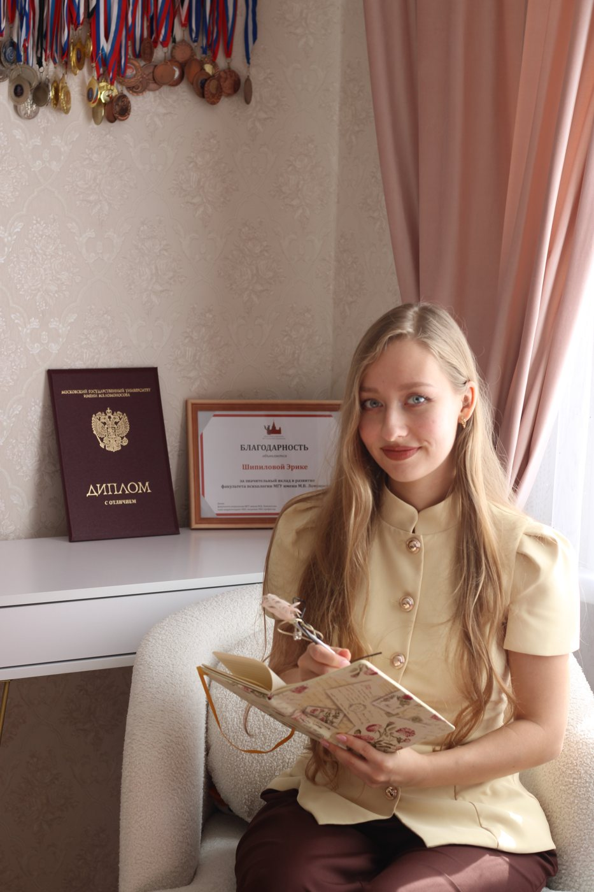
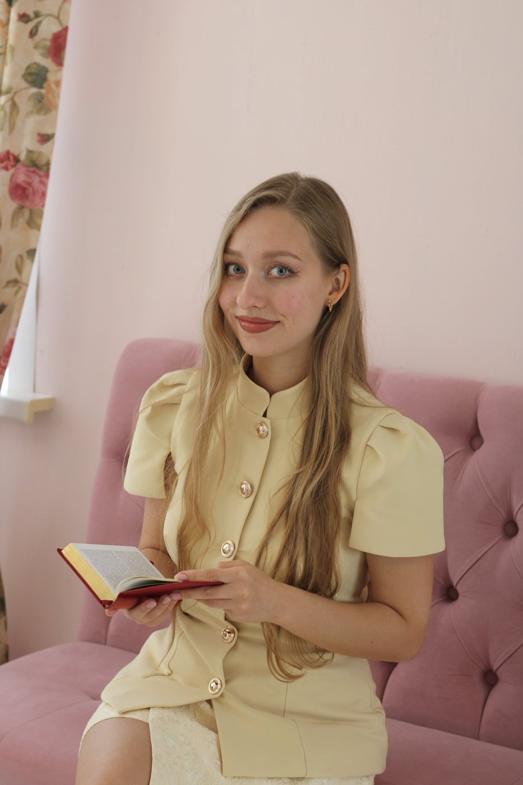

Психолог, аспирант МГУ
Онлайн из любой точки мира
Меня зовут Эрика Шипилова, я дипломированный психолог МГУ, аспирант, автор научных статей по детско-родительским отношениям. Я работаю не только с ребенком, а со всей семейной системой. Вместе мы найдем выход даже из сложного кризиса.


Меня зовут Эрика Шипилова. Я окончила факультет психологии МГУ с красным дипломом, сейчас я аспирант кафедры психологии образования и педагогики. Моя кандидатская диссертация посвящена детско-родительским отношениям, а точнее тому, как взаимодействие в семье влияет на мотивацию, самооценку, эмоции и будущее подростка.
Помимо вклада в науку для меня очень важно помогать людям, именно поэтому я выбрала психологию как свою миссию. За 6 лет изучения семейной психологии и 5 лет работы с детьми в образовательной среде я поняла главное — чтобы помочь ребенку, нельзя относиться к нему как к изолированному механизму, его нужно рассматривать как часть семьи и его окружения. Поэтому я смотрю на семью как на единый организм, где все влияют на всех.
МГУ им. М.В. Ломоносова, факультет психологии, специалитет — с отличием
МГУ им. М.В. Ломоносова, профессиональная переподготовка «Психология в образовании», 2026
Диплом о переподготовке (PDF) →Более 5 лет работы с подростками в образовательной среде
Тим-лидер в Maxitet. Организатор внеурочной работы организации
В начале работы мы формулируем конкретный запрос и договариваемся, как будем понимать, что терапия движется в нужную сторону.
Изменения происходят не только в кабинете. Иногда даю небольшие упражнения — по желанию.
Для меня важно доверие, когда на консультации вы чувствуете себя безопасно и можете говорить честно.
Все консультации проходят онлайн по видеосвязи. Формат и частоту встреч мы обсуждаем на первой сессии.
Напишите пару слов о трудностях, подскажу, с чего лучше начать.
Написать в TelegramДиплом факультета психологии МГУ с отличием и благодарность за значительный вклад в развитие факультета психологии МГУ имени М.В. Ломоносова.
Полный список работ — на портале ИСТИНА МГУ:
istina.msu.ru — профиль Эрики Шипиловой →Напишите мне в Telegram, Max, ВКонтакте или на почту: пару слов о том, что беспокоит, и для кого консультация. Я отвечу в течение рабочего дня и предложу время.
Мы знакомимся, вы рассказываете о ситуации, а я задаю уточняющие вопросы. Вместе формулируем запрос — с чем именно хотим работать — и договариваемся о формате и частоте встреч.
По видеосвязи, из любой точки мира. Нужны только устройство с камерой, стабильный интернет и место, где вас никто не услышит и не прервёт.
Да. Всё, что вы рассказываете на консультации, остаётся между нами. Я соблюдаю этический кодекс психолога и не передаю информацию третьим лицам.
Для подростков младше 15 лет нужно согласие родителей. С подростками старше 15 лет мы можем работать и самостоятельно. При этом содержание разговоров с подростком остаётся конфиденциальным, кроме ситуаций, когда есть угроза его жизни и здоровью.
Отвечаю на сообщения в течение рабочего дня.